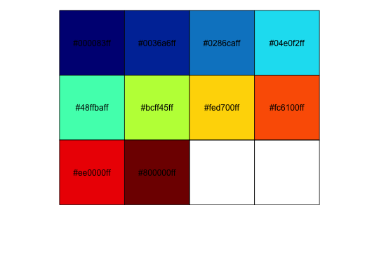
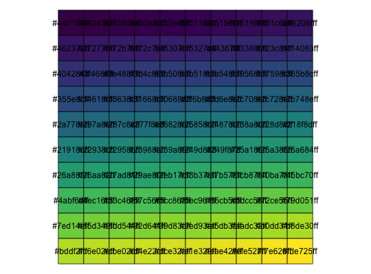

Usage
colormap_pal(alpha = 1, colormap = colormaps$jet, reverse = FALSE)
Arguments
- alpha
- pass through parameter to
colormap
- colormap
- pass through parameter to
colormap
- reverse
- pass through parameter to
colormap
Value
A function that can generate colors from a specified colormap.
Description
Create a Palette generating function
Examples

